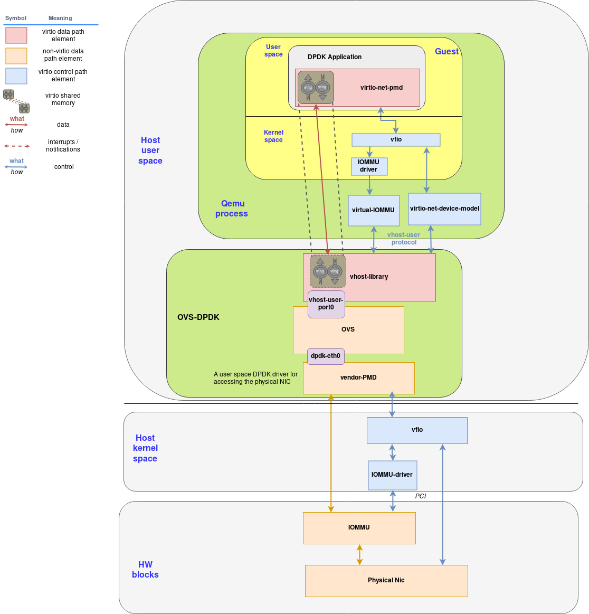
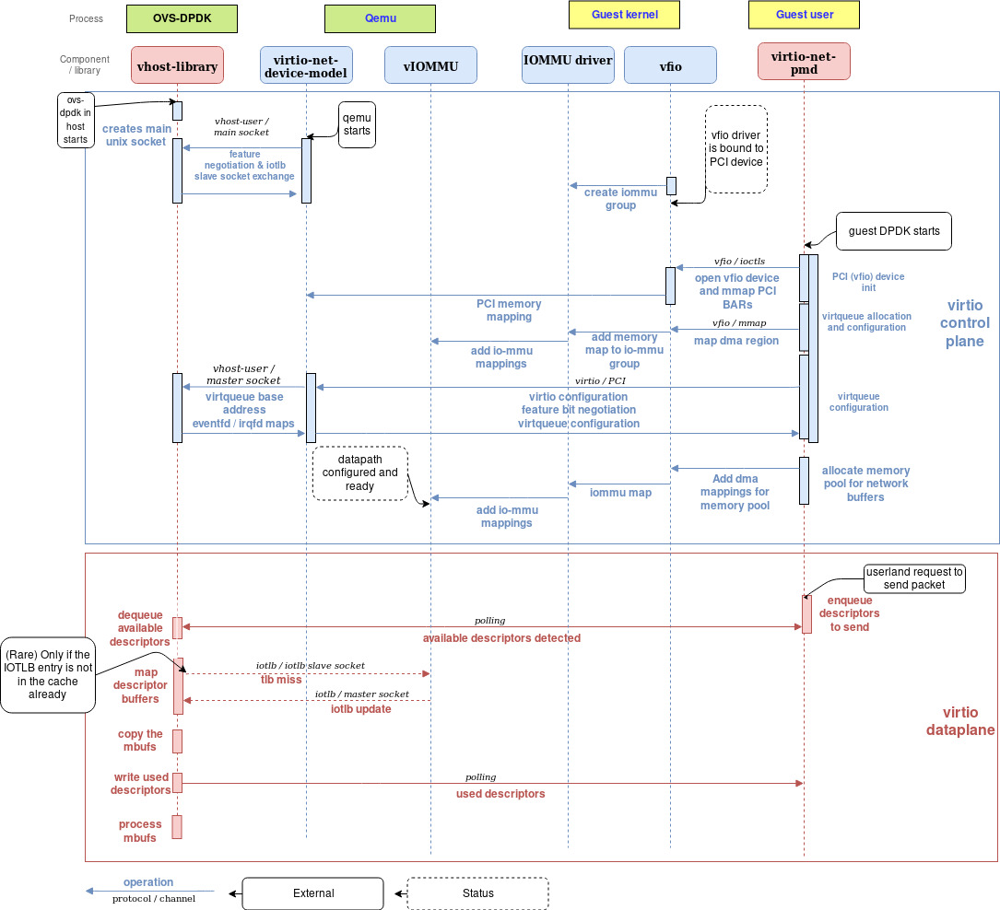

DPDK中的VIRTIO
背景
通过vhost-net机制将网络处理从qemu中剥离出来，放在内核态里面，能够提升网络处理的性能。 但是其实通过DPDK可以将dataplane实现在用户态并取得更好的性能。
DPDK 及其好处
DPDK 是一个用户态的告诉包处理库，许多网络虚拟化应用中会使用到它们从而做到bypass内核的臃肿网络协议栈。
DPDK提供了一系列的好处:
- 进程亲和性，榜核
- 支持大页
- 无锁的ring buffers
- 轮训替代中断
- 支持VFIO
除了上面的这些特性，DPDK还提供了两个与VIRTIO相关的特性:
- Vhost-user 库
- Virtio-PMD 库
DPDK和OVS： 一个完美的结合
DPDK带来性能提升的一个很好的例子就是和OVS（Open vSwitch)的结合. OVS-DPDK能够相对OVS带来上十倍的性能提升。
Vhost-user库
vhost协议是将virtio datapath从QEMU中分离出来，它包括
- A set of messages that allow the primary to send the virtqueue's memory layout and configuration to the handler.
- A pair of eventfd-type file descriptors that allow the guest to bypass the primary and directly send and receive notifications to/from the handler.
vhost-net是vhost将virtio datapath offload到内核中，vhost-user是将virtio datapath offload的DPDK应用中。
vhost-net和vhost-user最大的不同是communication channel. vhost-net通过ioctl通信，而vhost-user通过socket通信。
vhost-user库支持的control plane操作：
- feature negotiation
- memory region configuration
- vring configuration
- kick and call file descriptors sending
通过上述协商后，DPDK应用能够和guest vm共享内存页并且guest可以直接想dpdk发起notification，guest不会产生下陷。
QEMU virtio device model让这些统一在一起，它支持PCI设备的发现，它将ioeventfd映射在设备mmio的内存空间，irqfd映射在GSI。这可以使得虚拟机可以意识不到所有的通知和中断都被DPDK接收了。

虚拟机中的用户态网络
为了在虚拟机的用户态直接使用网络，需要三个组件:
- VFIO
- Virtio-pmd driver
- IOMMU driver
VFIO
VFIO 提供以下支持:
- 将设备的配置空间映射在用户内存中
- 基于IOMMU group进行DMA和中断重映射
- 基于signal实现Eventfd和irqfd
VFIO的出现让驱动的编写更加简单
Virtio-pmd
DPDK提供了一个驱动的抽象，叫做PMD（Poll Mode Driver）。位于设备驱动和用户程序之间。
virtio-pmd使用PMD API，提供给DPDK应用程序一个快速且无锁的virtio设备访问。
virtio-pmd支持:
- Flexible mergeable buffers per packet when receiving and scattered buffer per packet when transmitting.
- Multicast and promiscuous mode
- MAC/vlan filtering
IOMMU介绍
IOMMU提供了以下的好处:
- 提供连续的地址空间
- 一些设备自身访问不了整个内存空间
- 保护
坏处:
- 性能下降
- 减少了可用的物理内存
IOMMU提供了PCIe Address Translation Service接口，设备可以在设备端缓存IOMMU翻译结果
vIOMMU, guest使用的IOMMU
QEMU的vIOMMU提供了以下特性:
- 将guest的IOVA翻译成GPA
- 设备隔离
- 实现了I/O TBL API, qemu可以访问到这些映射
vIOMMU 和 DPDK 集成
通过VFIO
vIOMMU 和 vhost-user 集成
当vhost-user库尝试直接访问vhost-user和vm的shared memory时，它需要将所有的地址翻译成它自己的内存. 它通过访问Device TLB API来访问QEMU的vIOMMU。Vhost-user库通过使用PCIe的ATS标准来请求page translation。
在这里有三种地址翻译
- QEMU vIOMMU将IOVA翻译成GPA
- Qemu的内存管理将GPA翻译成HVA
- Vhost-user library将HVA翻译成它自己的HVA。(mmap)
尽管这么多翻译对性能会产生影响，但是可以通过DPDK的static,hugepage allocation 来避免。

- 当一个IOVA指向了virtqueue，它会被缓存在vIOMMU的TLB中
- QEMU能够将gpa翻译成hva
- 当vhost-user库尝试访问一个没有页表映射的IOVA，它会通过套接字IOTLB miss的消
- IOTLB API收到消息后，将翻译结果通过套接字返回给vhost-user
- 最后, vhost-user库完成最后的翻译，它能够将qemu 的hva翻译成自己的hva
Putting everything together

流程示意图

控制面
控制面初始化的步骤
- DPDK创建一个套接字用于和qemu进行协商
- qemu和dpdk建立socket连接，并且创建一个新的socket用于和vhost-user发送iotlb同步的信息
- guest boot，然后创建iommu group以访问vfio
- dpdk应用启动：
- 初始化PCI-vfio设备
- 创建virtqueue
- 使用vfio
- virtio feature negotiation
- dpdk应用创建一大块连续的内存用于网络buffer
数据面
- DPDK应用程序操作virtio-pmd来发包
- vhost-user polling到了virtquque的变化，然后处理
- 对于每个descriptor，vhost-user pmd映射一个buffer，有些比较少见的情况会出现，buffer的内存对应的页表没有被缓存在IOTLB里面，这时候一个请求就会发给QEMU。但是由于DPDK使用大页，这种情况很少。
- vhost-user PMD 拷贝包对应的bufffer到mbufs
- 更新已用描述符，被guest中的dpdk应用poll到
- mbufs被host中的dpdk应用处理
总结
DPDK和Open vSwitch结合起来能够提供虚拟化需要的灵活性的高性能。